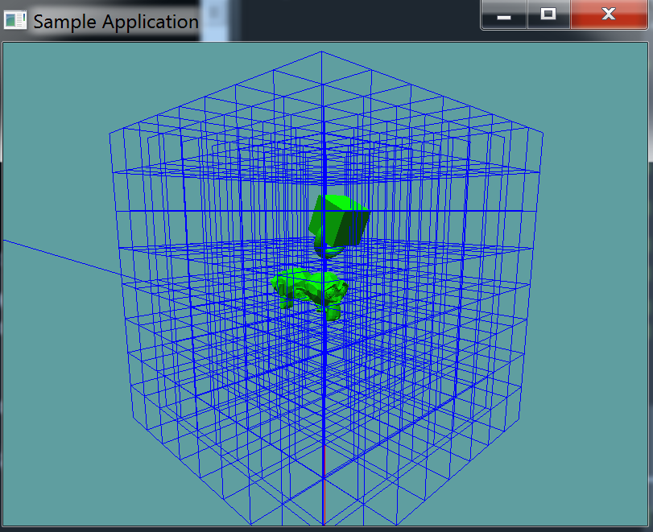

Octree Node
A tree is made up of many nodes, the octree is no different. There is no specific Octree class, just an OctreeNode within our scene that servers as the root of the tree.
Create Node
Let's start off with the definition of a node. A node contains an Axis Aligned Bounding Box, this is the area of the node. A reference to it's parent (We are in a tree after all), and a list of it's children. The node also contains a list of objects it can potentially hold.
If a node has children, it will not have contents. If a node has contents, it will not have children. This makes determining what is and isn't a leaf node fairly simple. Leaf nodes have no children, therefore Children will be null.
The constructor will, by default make each node a leaf node. It isn't until later, when we split the node that it can become a non-leaf.
using System;
using System.Collections.Generic;
using Math_Implementation;
using CollisionDetectionSelector.Primitives;
namespace CollisionDetectionSelector {
class OctreeNode {
public AABB Bounds = null;
public OctreeNode Parent = null;
public List<OctreeNode> Children = null;
public List<OBJ> Contents = null;
public OctreeNode(Point position, float halfSize, OctreeNode parent) {
Bounds = new AABB(
new Point(position.X - halfSize, position.Y - halfSize, position.Z - halfSize),
new Point(position.X + halfSize, position.Y + halfSize, position.Z + halfSize)
);
Parent = parent;
Contents = new List<OBJ>();
// Keep children null, this is a leaf node until the "Split" function is called
}
}
}
Split Node
The split node function will invalidate the current octree. Therefore it MUST be called BEFORE any objects are inserted into the tree. Much like the BVH version, our split method is going to be recursive.
Unlike the BVH however, the user will have control over how many times a node gets split! The function takes a single integer, the number of times to split the node. This integer is decremented by 1 for each recursive call.
public void Split(int level) {
// Bounds.Extens.x is the same as y and z, all nodes are square
// We want each child node to be half as big as this node
float splitSize = Bounds.Extents.X / 2.0f;
// Also, the constructor of the Octree node takes in the CENTER
// position of the new node, therefore we want to create new
// nodes from the center of this node + or - 1/4 the size of
// this node. This is similar to BVH, but different in size.
Vector3[] childPattern = new Vector3[] {
new Vector3(+1f, -1f, -1f), // Right, Top, Front
new Vector3(+1f, -1f, +1f), // Right, Top, Back
new Vector3(+1f, +1f, -1f), // Right, Bottom, Front
new Vector3(+1f, +1f, +1f), // Right, Bottom, Back
new Vector3(-1f, -1f, -1f), // Left, Top, Front
new Vector3(-1f, -1f, +1f), // Left, Top, Back
new Vector3(-1f, +1f, -1f), // Left, Bottom, Front
new Vector3(-1f, +1f, +1f), // Left, Bottom, Back
};
// Make the actual child nodes
Children = new List<OctreeNode>();
Contents = null; // We are no longer a leaf node!
foreach (Vector3 offset in childPattern) {
// Remember to account for the center of the current node
Point position = new Point(Bounds.Center.ToVector() + offset * splitSize);
OctreeNode child = new OctreeNode(position, splitSize, this);
Children.Add(child);
}
// If we have not reached the max split depth yet,
// go ahead and recursivley call this method for all children
if (level > 1) {
foreach(OctreeNode child in Children) {
child.Split(level - 1);
}
}
}
Insert Object
Inserting an object is fairly straight forward. The object will only insert if the Bounds of the current node intersect it. If that's not the case, none of the children nodes will intersect the object either!
^ The above statement only holds true if the ABB-OBJ test is implemented as a SAT test. Ours is not, this is why we are going to be testing the bounding sphere, instead of the OBJ its-self. That way, our Octree insertion is a series of Sphere-AABB tests.
The one catch here is that OBJ.BoundingSphere is local space, not world space! So, we need to fix that. This is a simple translation we've already made when handling the BVH code before.
public bool Insert(OBJ obj) {
// Remember, the bounding sphere is model space, we need it to
// be world space! Multiply the position and scale the radius
Sphere worldSpaceSphere = new Sphere();
worldSpaceSphere.Position = new Point(
Matrix4.MultiplyPoint(obj.WorldMatrix, obj.BoundingSphere.Position.ToVector())
); // End new point
float scale = Math.Max(obj.WorldMatrix[0, 0], Math.Max(obj.WorldMatrix[1, 1], obj.WorldMatrix[2, 2]));
worldSpaceSphere.Radius = obj.BoundingSphere.Radius * scale;
if (Collisions.Intersects(worldSpaceSphere, Bounds)) {
// We knoe the obj intersects this node, if it's a leaf
// add it to the object list, if not, recurse!
if (Children != null) {
foreach(OctreeNode child in Children) {
child.Insert(obj);
}
}
else {
Contents.Add(obj);
}
return true;
}
return false;
}
Remove Object
Removing an object is super simple. If this node is a leaf node, search trough the objects it contains, and remove the object if it is in the list. If not, recursivley call the function for every node
public void Remove(OBJ obj) {
if (Children != null) {
foreach(OctreeNode child in Children) {
child.Remove(obj);
}
}
else {
Contents.Remove(obj);
}
}
Update Object
Updating an octree is a very hot topic of research. Everyone wants to have the fastest update possible. When an object moves, rotates or scales, we have to update what octree nodes it belongs to.
While there are a LOT of algorithms for this out there, we're going to implement a very basic one! Any time an object rotates or moves we simply remove it from the tree and re-insert it. This is the brute force method, it's not efficient, but it is reliable
public bool Update(OBJ obj) {
Remove(obj);
return Insert(obj);
}
This update method actually has a bit of a flaw. Right now, when an object is updated it is removed from the octree and then added back in. Really, this should be recursive! All of the object's children, and it's children need to be removed and inserted too! We can easily turn this function into a recursive one:
public bool Update(OBJ obj) {
if (obj.Children != null) {
foreach (OBJ child in obj.Children) {
Update(child);
}
}
Remove(obj);
return Insert(obj);
}
Debug Render
It's useful to be able to visualize what we just implemented! For that reason, i say we add a DebugRender function. This function is simple, it just recursivley draws the bounding rectangle of each node.
public void DebugRender() {
Bounds.Render();
if (Children != null) {
foreach (OctreeNode node in Children) {
node.DebugRender();
}
}
}
After having finished this article, i decided it would be visually great to have the bounding spheres of objects also render so i could approximate which OctreeNode's the object is stored in. You don't have to do this, but it's a good exercise, if you want to see how i did it, the code is here
Scene Integration
Now that we have an octree node, all we have to do is add the root node to the scene, and we have an octree! I'm going to be modifying the existing scene class for this.
First, add the octree root to the scene. Next, add an initalize function. This function will take in the overall size of the octree (The half-size of it's root node). This function is responsible for creating the tree and splitting it. A split size of 3 will do for now.
public OctreeNode Octree = null;
public void Initialize(float octreeSize) {
Octree = new OctreeNode(new Point(0, 0, 0), octreeSize, null);
Octree.Split(3);
}
In larger AAA games, it's not uncommon to see the default octree be of size 5000, with a split level of 8.
Next up, let's modify the render function of the scene to render the debug version of the octree
public void Render() {
RootObject.Render();
GL.Disable(EnableCap.Lighting);
GL.PolygonMode(MaterialFace.FrontAndBack, PolygonMode.Line);
Octree.DebugRender();
GL.PolygonMode(MaterialFace.FrontAndBack, PolygonMode.Fill);
GL.Enable(EnableCap.Lighting);
}
And that's it for us! In an actual game engine you would not expose the RootObject or Octree. Instead you'd have a function like AddObject that would create a new object and add it to both the root and octree. For our example however, this is not needed, whoever owns the scene will also update the octree.
Unit Testing
The code for this unit test is almost identical to the last one. The only real difference is in the Initialize and Update functions. Whenever we create a new node in the Initialize function, it is added to the octree. And, when we rotate the cube node insize the Update function we update the octree.
The rendering looks different, the octree we created will be visible. This has nothing to do with the unit test however, as we simply added the code to render the octree to the scenes render function, which is called from the unit test.
The current project should look like this:

That blue line sticking out the back is NOT a rendering artifact. It's a ray that has hit an object.
using OpenTK.Graphics.OpenGL;
using Math_Implementation;
using CollisionDetectionSelector.Primitives;
using CollisionDetectionSelector;
namespace CollisionDetectionSelector.Samples {
class SceneSample02 : Application {
Scene scene = new Scene();
OBJ cubeNode = null;
OBJLoader suzane = null;
OBJLoader cube = null;
OBJLoader torus = null;
Ray[] rays = new Ray[] {
new Ray(new Point(0.0f, 0.0f, 0.0f), new Vector3(0.0f, -1.0f, 0.0f)),
new Ray(new Point(-1f, -3f, -5f), new Vector3(0f, 0f, 1f))
};
public override void Intialize(int width, int height) {
GL.Enable(EnableCap.DepthTest);
GL.Enable(EnableCap.CullFace);
GL.Enable(EnableCap.Lighting);
GL.Enable(EnableCap.Light0);
GL.PointSize(5f);
GL.Light(LightName.Light0, LightParameter.Position, new float[] { 0.0f, 0.5f, 0.5f, 0.0f });
GL.Light(LightName.Light0, LightParameter.Ambient, new float[] { 0f, 1f, 0f, 1f });
GL.Light(LightName.Light0, LightParameter.Diffuse, new float[] { 0f, 1f, 0f, 1f });
GL.Light(LightName.Light0, LightParameter.Specular, new float[] { 1f, 1f, 1f, 1f });
scene.Initialize(7f);
suzane = new OBJLoader("Assets/suzanne.obj");
cube = new OBJLoader("Assets/cube.obj");
torus = new OBJLoader("Assets/torus.obj");
OBJ node = new OBJ(suzane);
node.Parent = scene.RootObject;
node.Parent.Children.Add(node);
node.Position = new Vector3(2.0f, 0.0f, 0.0f);
/* NEW */ scene.Octree.Insert(node);
node = new OBJ(suzane);
node.Parent = scene.RootObject.Children[0]; // suzane reference
node.Parent.Children.Add(node);
node.Position = new Vector3(-2.0f, -1.0f, 0.0f);
node.Scale = new Vector3(0.5f, 0.5f, 0.5f);
node.Rotation = new Vector3(90.0f, 0f, 0f);
/* NEW */ scene.Octree.Insert(node);
node = new OBJ(suzane);
node.Parent = scene.RootObject.Children[0]; // suzane reference
node.Parent.Children.Add(node);
node.Position = new Vector3(0.0f, 0.0f, -2.0f);
node.Rotation = new Vector3(0f, 180f, 0f);
/* NEW */ scene.Octree.Insert(node);
node = new OBJ(cube);
node.Parent = scene.RootObject;
node.Parent.Children.Add(node);
node.Position = new Vector3(-2.0f, 3.0f, 1.0f);
node.Rotation = new Vector3(45.0f, 0.0f, 0.0f);
cubeNode = node;
/* NEW */ scene.Octree.Insert(node);
node = new OBJ(torus);
node.Parent = cubeNode;
node.Parent.Children.Add(node);
node.Position = new Vector3(0.0f, 0.0f, -1.0f);
/* NEW */ scene.Octree.Insert(node);
bool[] b_res = new bool[] { true, false };
float[] t_res = new float[] { 2.730469f, 0f } ;
float t = 0.0f;
for (int i = 0; i < rays.Length; ++i) {
bool result = scene.Raycast(rays[i], out t) != null;
if (result != b_res[i]) {
System.Console.WriteLine("ray " + i + ", expected: " + b_res[i].ToString() + ", got: " + result.ToString());
}
if (!CMP(t, t_res[i])) {
System.Console.WriteLine("ray " + i + "t, expected: " + t_res[i].ToString() + ", got: " + t.ToString());
}
}
}
bool CMP(float x, float y) {
return System.Math.Abs(x - y) < 0.00001f;
}
public override void Render() {
base.Render();
DrawOrigin();
GL.Enable(EnableCap.Lighting);
scene.Render();
GL.Disable(EnableCap.Lighting);
foreach (Ray r in rays) {
if (scene.Raycast(r) != null) {
GL.Color3(1f, 0f, 0f);
}
else {
GL.Color3(0f, 0f, 1f);
}
r.Render();
}
}
public override void Update(float deltaTime) {
base.Update(deltaTime);
Vector3 cubeRotation = cubeNode.Rotation;
cubeRotation.X += 45.0f * deltaTime;
cubeNode.Rotation = cubeRotation;
/* NEW */ scene.Octree.Update(cubeNode);
}
}
}